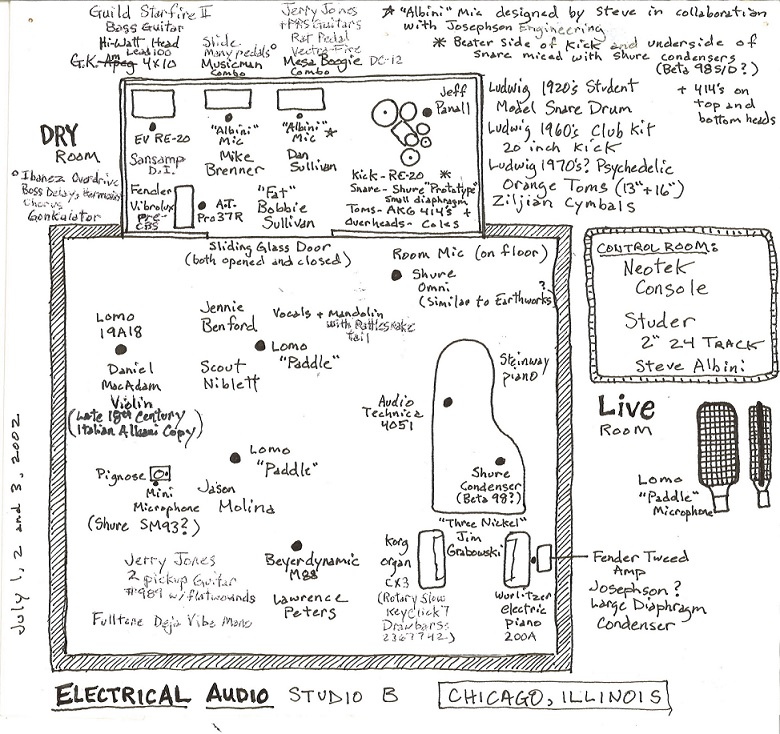
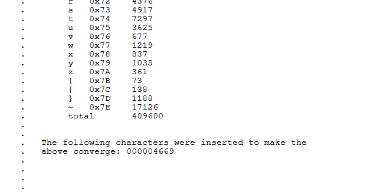
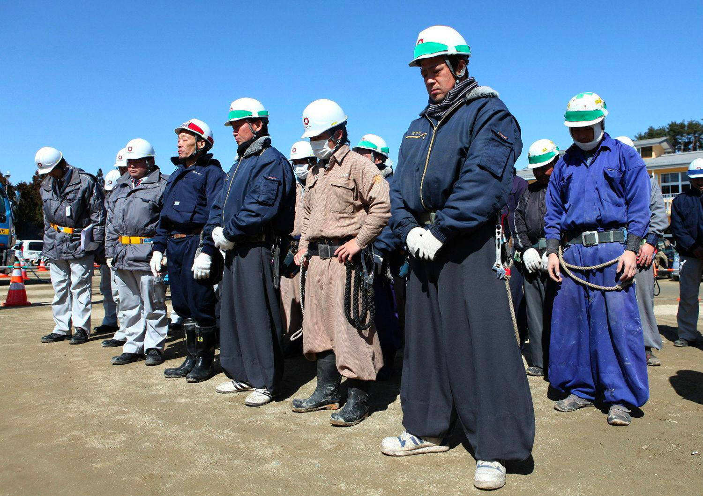
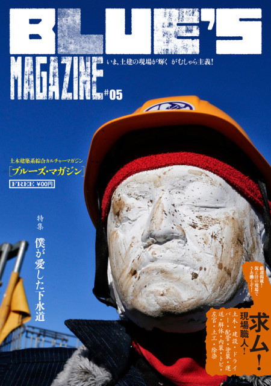

Steve Albini is dead. I’m surprised and upset. I thought we’d have more time with him.
Steve Albini made music. He was a figurehead in the Chicago noise rock scene in the 80s and 90s with Big Black and Shellac. He looms even larger for his work in recording studios, having engineered (engineer, for him, never producer) countless albums scattered across the last four decades. His fingerprints adorn so much of the music that has mattered to me in the past decade of my own life: Pixies, Slint, GY!BE, Songs: Ohia, Screaming Females, Cloud Nothings—and they all seemed to be at their rawest, their most confrontational when working with him. Albini could drag forth the naked filthy essence of the music and drag forth the same from the listener and point them at each other. Often dissonant, sometimes uncomfortable, always totally captivating.
Despite the effect on the listener, the sound didn’t come from an overtly spiritual technique. Albini was a legendary technician, and he relied on an obsessive process of knowing his tools deeply and deploying them precisely. The end result was music that felt captured rather than built; where critics of his style heard clutter and clamor, Albini heard the truth. His work in the studio was a blend of art and archivism never heard before or since.

The things that Albini wanted were as important as the things that he made. A champion of DIY music, he had a resoundingly strong and straightforward sense of how the world around him ought to be, and honed a sharp-tongued candor for use when the world did not comply. A DIY champion, his most vicious abhorrence was reserved for (of course) the major labels. His 1993 essay The Problem With Music is a seminal dissection of the relationship between bands, their music, and those who sell it; though the underlying facts of the industry have long since changed, the sentiment and righteousness remain the same today.
By the time he passed, Steve Albini had long since achieved paradise. He made it there by doing, saying, making whatever he wanted, upsetting people, sometimes rightly apologizing. That paradise was tucked away in Electrical Audio, all his to wander and tweak, setting up the right microphones to whisk away the chaff and find the heart of each record, facing down an endless parade of musicians ready to trust him, one after another. He deserved it as much as he needed it.
I recommend reading Chicago Magazine’s 1994 profile of Albini and the Big Black chapter of Michael Azerrad’s Our Band Could Be Your Life. And of course, listening to the albums. Photo at top John Bohnen.
Recently, I was reading tom7’s “printable x86” SIGBOVIK paper. His video accompanying the paper is incredible—in fact, most of the videos on his Youtube channel are, but they do tend to leave my brain feeling like a wrung rag. I didn’t look at the paper itself until a few months after watching the video, and while I was reading, something jumped out at me:

If I’ve talked to you about writing before then I’ve probably talked to you about Defector. If not, then I’ll let them do the work of catching you up to speed. David Roth recently wrote this essay called How Will The Golden Age Of “Making It Worse” End? that very tightly pulls into focus a recent ambiguous malaise that’s been wafting through the cultural airspace. Roth and Defector are perfectly poised to tell this story - the machinations of “Enshittification Capital” were central to the death1 of Deadspin, as firm revulsion towards those machinations was during the formation of Defector. As usual, he tees off:
If it was always foolish to expect the free market to make things better, it feels more fanciful by the day to imagine a future in which the cynics and sociopaths in charge of that market do anything but continue to make it worse; they’ve evinced no capacity for that, but also no interest in it. Whether this deterioration is the result of buccaneering libertarian delusion or just a bloodless calculation that concepts like “safety” and “quality” are more nice-to-have’s than need-to-have’s, it appears to be the only idea that any of these people have.
Roth’s writing alone is worth a subscription to Defector. His guest episodes on Chapo Trap House uniformly rip too.
I saw these on Twitter a bit ago, and I’ve been thinking about them ever since. There’s a very cool writeup about them on One Block Down.

Even sicker: there’s a magazine for construction workers called Blue’s that looks absolutely incredible. There’s a writeup about it in English here, but it looks like the Blue’s website itself at kandensha.com is dead. It’s alive on Wayback Machine though, so I’m gonna poke around and see if Google Translate can dig up anything interesting for me. If not, it’ll be worth it just to keep looking at these covers. Definitely gonna set up an eBay alert for back issues.

My car’s aux cord recently gave out. The radio landscape in Juneau is sparser than I’m used to from down south1—though not totally barren, thanks to KXLL and syndicated Folk Alley too. I’ve been lightly googling around for cheap pirate radio equipment, but that’s a plan for another day.
That leaves me with my car’s 6-disc changer2. CDs haven’t been a big part of my life for quite some time, and it was pleasantly nostalgic to throw together a few playlists to burn onto a new stack of blank discs. Committing a list of songs to the immutable physical world feels very high-stakes and it’s been fun to stew on it. We just got ~30 inches of snow in 3 days, and I’ve been getting lots of mileage out of this punk playlist while fighting for my life on the roads. I haven’t changed to another CD for almost a week. A fast-twitch, high-focus driving playlist, if not a relaxing one.